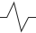

<div>
    <figure id="visualized-data" v-if="peopledata.data.isLoaded">
      <header>
        <h1>Mass and height</h1>
        <div id="toggleUnknownWeights">
          <label>Show ppl w.<span class="br"></span>unknown mass?</label>
          <div class="checkboxSwitch">
            <input type="checkbox" autocomplete="off" v-on:click="toggleShowUnknownWeights( index )" />
            <span class="style"></span>
          </div>
        </div>
        <div id="v-model-wrap">
          <v-select
            :searchable="false"
            v-model="dropDown.dropDownSelection"
            :options="dropDown.dropDownOptions"
            :on-change="updateCurrentPersonByDropDown()"
          ></v-select>
        </div>
        <dl id="currentPerson">
          <div class="dlCell">
            <dt><abbr title="Height">H</abbr>:</dt>
            <dd>{{ ( peopledata.people[ peopledata.currentPersonIndex ].height === undefined ? '?' : peopledata.people[ peopledata.currentPersonIndex ].height ) }}</dd>
          </div>
          <div class="dlCell">
            <dt><abbr title="Mass">M</abbr>:</dt>
            <dd>{{ ( peopledata.people[ peopledata.currentPersonIndex ].mass === undefined ? '?' : peopledata.people[ peopledata.currentPersonIndex ].mass ) }}</dd>
          </div>
        </dl>
      </header>
      <div class="inner-wrap h h">
        <div class="canvas">
          <div id="axis">
            <label id="x-label">&larr; Mass</label>
            <label id="y-label">Height &rarr;</label>
          </div>
          <div v-for="i in range( 2, 5 )" v-bind:class="'y-axis-lines sections-' + i">
            <div
              class="y-axis-line"
              v-for="increment in range( 1, i )"
              v-bind:style="{ bottom: increment * peopledata.data.heightIncrements[ 'sections-' + i ].percentage + '%' }"
            ></div>
          </div>
          <div id="graph" v-bind:class="{ showUnknownWeights: this.showUnknownWeights }">
            <div id="mass-unknown-vertical-divider" v-bind:class="{ show: this.showUnknownWeights }"></div>

            <div v-for="i in range( 2, 5 )" v-bind:class="'x-axis-lines sections-' + i">
              <div
                class="x-axis-line"
                v-for="increment in range( 1, i )"
                v-bind:style="{ left: increment * peopledata.data.massIncrements[ 'sections-' + i ].percentage + '%' }"
              ></div>
            </div>
            <div
              class="point"
              v-for="(person, index) in peopledata.people"
              v-bind:class="{ noMass: ( person.mass === undefined && person.height !== undefined ), hide: ( person.height === undefined && person.mass === undefined ), selected: person.name === peopledata.people[ peopledata.currentPersonIndex ].name }"
              v-bind:style="{ bottom: person.heightPercentOfMax + '%', left: ( person.massPercentOfMax === 'max' ? 'calc( 100% + 35px )' : person.massPercentOfMax + '%' ) }"
            >
              <input
                type="radio"
                name="point-selection"
                autocomplete="off"
                v-model="peopledata.currentPersonIndex"
                v-bind:value="index"
                v-on:click="updateCurrentPerson( index )"
              />
              <span class="style"></span>
              <div v-bind:class="{ info: true, hide: isInfoHidden }">
                <button type="button" class="close" v-on:click="hideInfo()">&times;</button>
                <h3>
                  {{ person.name }}
                </h3>
                <p><abbr title="Height">H</abbr>: {{ ( person.height === undefined ? '?' : person.height ) }}</p>
                <p><abbr title="Mass">M</abbr>: {{ ( person.mass === undefined ? '?' : person.mass ) }}</p>
                <footer>
                  <router-link v-bind:to="{ name: 'people', params: { id: getCurrentPersonLinkId( person ) }}">Info</router-link>
                </footer>
              </div>
            </div>

            <div id="y-axis-wrap">
              <div v-for="i in range( 2, 5 )" v-bind:class="'y-axis sections-' + i">
                <div
                  class="y-increment"
                  v-for="increment in range( 1, i, true )"
                  v-bind:style="{ height: peopledata.data.heightIncrements[ 'sections-' + i ].percentage + '%' }"
                >
                  <span class="incrementLabel">{{ peopledata.data.heightIncrements[ 'sections-' + i ].increment * increment }}</span>
                </div>
              </div>
            </div>
            
            <div id="x-axis-wrap" v-bind:class="{ showUnknownWeights: this.showUnknownWeights }">
              <div id="mass-unknown-label" v-if="this.showUnknownWeights"><abbr title="Mass">M</abbr>?</div>
              <div v-for="i in range( 2, 5 )" v-bind:class="'x-axis sections-' + i">
                <div
                  class="x-increment"
                  v-for="increment in range( 1, i )"
                  v-bind:style="{ width: peopledata.data.massIncrements[ 'sections-' + i ].percentage + '%' }"
                >
                  <span class="incrementLabel">{{ peopledata.data.massIncrements[ 'sections-' + i ].increment * increment }}</span>
                </div>
              </div>
              <div id="x-axis-break">
                <div class="svgWrap">
                  
                </div>
                <p>1358</p>
              </div>
            </div>
          </div>
        </div>
      </div>
    </figure>
  </template>
</div>